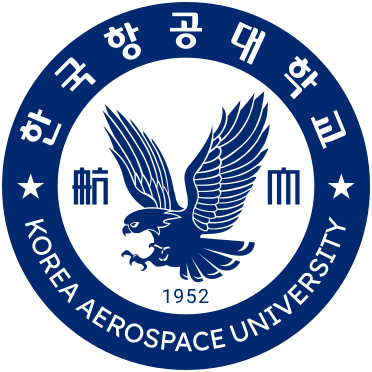
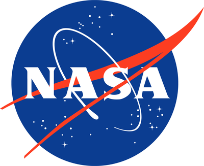

Ph.D. in Mechanical and Aerospace Engineering
George Washington University · Advisor: Peng Wei
Aug. 2026 – Present
I'm a first-year Ph.D. student in Mechanical and Aerospace Engineering at George Washington University, where I am a member of the Intelligent Aerospace Systems Lab, advised by Peng Wei. I'm interested in autonomous air traffic control, multi-agent systems, human-machine interactions, and deep generative models. Much of my research is about learning how aircraft interact with one another, and using those representations to predict, explain, and eventually automate decisions in complex air traffic situations.
Before joining GW, I received my Master's and Bachelor's degrees in Air Transportation from Korea Aerospace University, where I completed my Master's under the supervision of Keumjin Lee.
Research Keywords: autonomous air traffic control, multi-agent systems, human-machine interactions, deep generative models
I also built Aviation Conference Deadlines to track upcoming submissions in aviation and intelligent transportation.
For the most up-to-date list, see my Google Scholar.
George Washington University · Advisor: Peng Wei
Aug. 2026 – Present

Korea Aerospace University · Advisor: Keumjin Lee
Mar. 2022 – Feb. 2024
Korea Aerospace University
Mar. 2020 – Feb. 2022

NASA University Leadership Initiative (ULI)
Aug. 2026 - Present